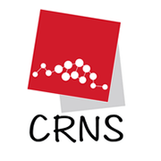

Khalil Charfi
Software Engineer • Full-Stack Developer
Professional Experience
CHECK24 Vergleichsportal GmbH
August 2022 – Present
- Played a key role in front-end development for Germany's leading online comparison platform, significantly improving page load times and user engagement through the use of Vue.js and Laminas.
- Enhanced the Fahrradversicherung (bicycle insurance) product by implementing advanced features and an online calculator with RESTful API integration, contributing to a more user-friendly experience.
- Implemented and maintained Drupal components, actively contributing to their redesign for improved user experience.
- Integrated tracking and analytics within Drupal components, providing valuable data for performance analysis.
- Optimized application performance through strategic caching mechanisms and efficient query optimizations.
- Proficiently conducted end-to-end testing with TestCafe and Cucumber, ensuring the reliability of features.
- Gained familiarity with monitoring and observability tools such as Grafana and Kibana, and infrastructure tools like Jenkins and Puppet.

ASM - All Soft Multimedia
January 2019 – August 2022
- Led the development and deployment of robust full-stack web and mobile applications, utilizing Laravel (back-end) and Angular (front-end) to deliver scalable and user-friendly solutions.
- Engineered offline-capable mobile apps using Flutter and Ionic, ensuring a consistent user experience across diverse network conditions.
- Cover 3D Mobile: Developed a cross-platform (iOS/Android) Ionic and Capacitor mobile application for sales management within the exterior carpentry sector. Integrated Keycloak for secure authentication, CouchDB/PouchDB for offline data synchronization, and established CI/CD pipelines with GitLab and Bitrise for streamlined deployment. The app features dynamic forms, pricing calculations, and multimedia capture.
- 3andi: Developed a digital loyalty card application with real-time promotional notifications and user engagement analytics, leveraging Firebase and Laravel APIs to enhance customer loyalty programs.
- 3andi Partner: Designed a comprehensive business-facing platform for managing promotions, sales points, and accounts, using a secure Laravel-based back-end and an intuitive Angular front-end.
- ProRestau Mobile: Developed a feature-rich restaurant management application utilizing Laravel, enabling real-time order tracking, efficient customer management, and seamless data synchronization between mobile devices and web platforms.
- ProInventory: Created a mobile application that streamlines inventory management through efficient data entry, search, visualization, barcode scanning, and real-time database updates.
- ProCaisse Mobility: Contributed to the development of an Android application that extends commercial management software, offering mobile solutions for precise tracking of merchandise movements, generating necessary documents, and enabling mobile printing via Bluetooth.
- ASM Merchandiser: Engineered a mobile application for sales teams to conduct in-store visits, generate detailed reports, and collect visual data for sales performance analysis.
- Implemented robust security measures, including secure authentication and role-based access control, using Keycloak across multiple applications.
- Streamlined deployment workflows by implementing and managing CI/CD pipelines using GitLab and Bitrise, facilitating efficient automated testing and deployment.
MyBus - Monkey Factory
March 2020 – November 2020
- Developed a cross-platform mobile public transport application using Ionic and Angular, providing real-time bus tracking and location visualization through Mapbox GL JS integration.
- Integrated GraphQL with Apollo Client to ensure efficient data management and enhance application responsiveness.
Softtodo IT Solutions
May 2018 – December 2018
- Redesigned and optimized front-end modules for the IRIDION platform (marketing/e-commerce), significantly enhancing user engagement and contributing to improved conversion rates.
- Integrated dynamic JSP components to facilitate A/B testing and implemented responsive layouts using Bootstrap, ensuring optimal display across various devices.
ASM - All Soft Multimedia
March 2017 – May 2018
- Developed a range of Android applications using Java and Laravel, tailored to specific business needs, with a focus on offline functionality and secure data synchronization using SQLite.
- Implemented robust offline functionality with secure synchronization capabilities, leveraging SQLite and Laravel for seamless data handling.
- DUX Mobile: Designed an offline-capable ERP companion application, providing sales teams with access to critical data and tools, significantly enhancing their operational efficiency.
- ProCaisse Mobile: Developed a mobile sales management application that enables efficient management of customer invoices, product information, and sales transactions, featuring offline and online data synchronization via Laravel.
- FastQueue: Engineered a queue management system with Bluetooth-enabled real-time counter updates, utilizing Laravel for backend event handling and data management.
- Optimized database queries and improved API performance, ensuring smooth operation under high usage.
- Collaborated with back-end teams to design scalable and secure RESTful APIs, maintaining strict adherence to industry standards.
University of Marburg, Department of Mathematics and Computer Science
October 2016 – December 2016
- Conducted evaluation and testing of a prototype for a remote health monitoring system designed for cardiac patients. Integrated IoT-enabled devices and sensors to capture patient vitals and detect abnormalities in real time.
- Implemented real-time data processing using Complex Event Processing (CEP) techniques with WSO2 CEP, enabling early detection of cardiac events.
- Collaborated with an international team to refine system performance and ensure compliance with healthcare monitoring standards.

Digital Research Centre of Sfax
February 2016 – February 2017
- Developed a real-time health monitoring system integrating IoT devices for cardiac patients to track vitals in real time.
- Implemented rule-based Complex Event Processing (CEP) to detect critical health events and generate alerts dynamically.
- Designed a scalable architecture using JHipster and Spring Boot for managing and analyzing healthcare data.
- Collaborated on the integration of healthcare standards to ensure the system's reliability and interoperability.
Skills
Programming Languages
PHP, JavaScript, TypeScript, Java, SQL
Front-End Frameworks & Libraries
Vue.js, Angular, Bootstrap, jQuery
Back-End Frameworks
Laravel, Laminas, Spring Framework
Mobile Development
Ionic, Capacitor, Flutter, Android Development
Databases
MySQL, Microsoft SQL Server, MongoDB, SQLite, CouchDB, PouchDB
DevOps & Tools
Git, Docker, GitLab CI/CD, Bitrise, TestCafe, Cucumber, Rancher, SonarQube, Jenkins, Puppet
CMS & Other Technologies
Drupal, RESTful APIs, GraphQL, Apollo Client, Keycloak, Firebase, Mapbox GL JS, WSO2 CEP
Operating Systems
Windows, Linux, macOS
Languages
Arabic, English, French